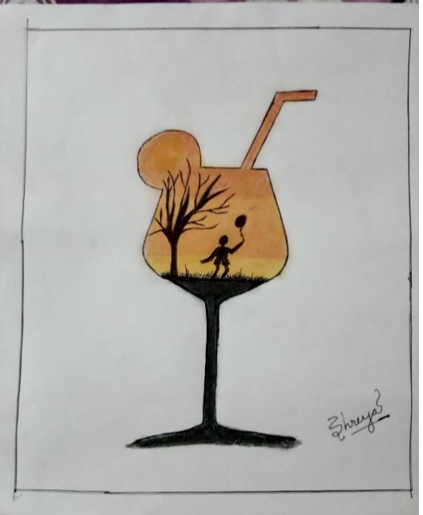

By Shreya
When we hear the word CHILD what comes to our mind? A playful curious little being or a couch potato? Obviously the first one. But today's digital world and modern parenting has wiped the spring from a child's life that is his childhood. They have been trapped in the maze of technology and modernization gradually turning into couch potatoes.

Mobile phones has turned children immobile. Games are being played not in the field but in the mobile. Tv and YouTube has become a saviour of modern day parents. Kids sit with their eyes glued to it and parents are at peace.Parents gift these young brains these gadgets as a symbol of their love at a age where they should rather gift them books or some some sports stuff as their mind and body needs that more. It has been found that 85% of the brain development takes place till the age of 6-10 years.Its the time when kids need to imbibe moral values, built a connection with mother nature and start reading and loving books. For physical and mental development outdoor sports or brain twisting indoor games are very important at this age. But parents rather than trying to save their kid's childhood keep proudly boasting about their kid's intelligence for being able to use these modern day gadgets. But actually it's not the child's intelligence but the skill of the person who designed that app or games etc which is reflected in it's use.

Electronic gadgets have become a matter of pride and privilege these days.And if a child doesn't posses one he/she is outcast in his peer group for not having knowledge about latest games,super heroes etc.This gives rise to inferiority complex in a child and in a way leads to mental depression.Watching these fantastical things wont help in either personality or brain development of a child rather turns them into a day dreamer.
These things have also affected health of children adversely. Lack of physical activity has lead to problems like obesity, diabetes in children. Looking at mobile or tv screens before sleeping leads to lack of sound sleep,reduced eye sight,dull brain and loss of creative thinking. The online games specially those designed for boys disturbs the emotional balance and makes them more aggressive leading to hyperactivity,anxiety and hypertension.
Even while playing games or browsing the internet they may come across adult content which may have a long term negative impact on their life. Even most modern day movies and web series have nothing good to deliver except the adult content. The exercise of chatting wont help a child in anyway rather his/her curiosity may lead him/her to chat with some jerks online and may land him/her into trouble and might affect his/her social life.
I am not against children being aware of modern day's technology n latest gadget as it's the need of the hour. But it's use should be kept to essential requirements. These digitalization has turned nucleated families into nucleated individual who even avoid interacting with each other. So as adults it's our responsibility to save the childhood and not let it get trapped in the modern world norms as portrayed below(#mylockdowncreativity). So let's take a pledge not to let this technology master our budding minds.